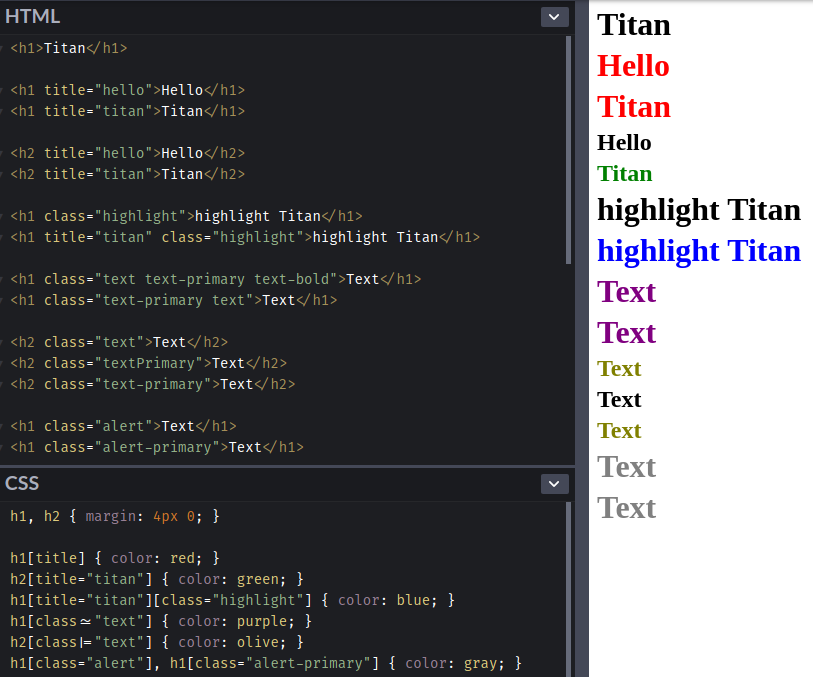
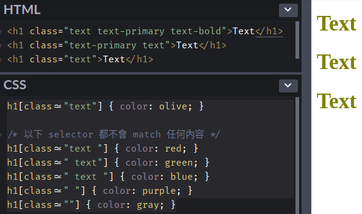
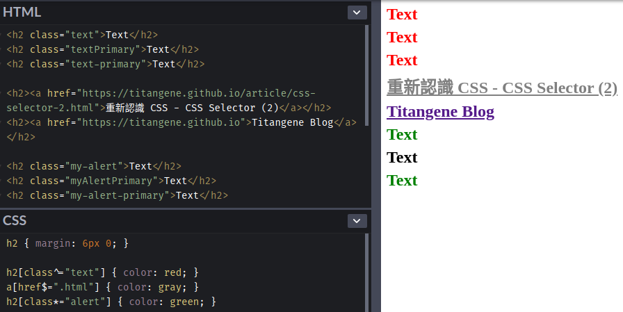

<!DOCTYPE html><html><head><meta name="generator" content="Hexo 3.9.0"><meta charset="utf-8"><title>重新認識 CSS - Attribute selector (屬性選擇器) | Titangene Blog</title><meta name="description" content="利用 blog 紀錄學習歷程"><meta http-equiv="X-UA-Compatible" content="IE=edge"><meta name="viewport" content="width=device-width,initial-scale=1,maximum-scale=1"><meta name="HandheldFriendly" content="True"><meta name="apple-mobile-web-app-capable" content="yes"><meta name="author" content="Titangene"><link rel="shortcut icon" href="/favicon.ico"><link rel="alternate" href="/atom.xml" title="Titangene Blog"><meta name="description" content="Selector (選擇器) 可用來選擇 HTML 和 XML 文件中的節點，並將樣式屬性綁定到文件 (HTML 和 XML) 中的元素上。當選擇器與某元素 match 的時候，就可以對選到的元素進行 CSS 樣式設定。本篇會介紹 attribute selector (屬性選擇器)。"><meta name="keywords" content="IT 鐵人賽"><meta property="og:type" content="article"><meta property="og:title" content="重新認識 CSS - Attribute selector (屬性選擇器)"><meta property="og:url" content="https://titangene.github.io/article/css-attribute-selector.html"><meta property="og:site_name" content="Titangene Blog"><meta property="og:description" content="Selector (選擇器) 可用來選擇 HTML 和 XML 文件中的節點，並將樣式屬性綁定到文件 (HTML 和 XML) 中的元素上。當選擇器與某元素 match 的時候，就可以對選到的元素進行 CSS 樣式設定。本篇會介紹 attribute selector (屬性選擇器)。"><meta property="og:locale" content="zh-tw"><meta property="og:image" content="https://titangene.github.io/images/cover/css.png"><meta property="og:updated_time" content="2019-10-13T05:45:19.940Z"><meta name="twitter:card" content="summary_large_image"><meta name="twitter:title" content="重新認識 CSS - Attribute selector (屬性選擇器)"><meta name="twitter:description" content="Selector (選擇器) 可用來選擇 HTML 和 XML 文件中的節點，並將樣式屬性綁定到文件 (HTML 和 XML) 中的元素上。當選擇器與某元素 match 的時候，就可以對選到的元素進行 CSS 樣式設定。本篇會介紹 attribute selector (屬性選擇器)。"><meta name="twitter:image" content="https://titangene.github.io/images/cover/css.png"><meta name="twitter:creator" content="@titangeneTW"><meta name="twitter:site" content="@titangene_blog"><meta property="fb:admins" content="100001106016019"><meta property="fb:app_id" content="2470546159839111"><meta property="og:image:width" content="1200"><meta property="og:image:height" content="630"><meta name="google-site-verification" content="AaJ39L7h-nWwJjXJMhAMtXSF6H6BUgGWXC80kYvLic8"><link rel="stylesheet" href="//fonts.googleapis.com/css?family=Inconsolata|Titillium+Web"><link href="https://fonts.googleapis.com/css?family=Source+Code+Pro&display=swap" rel="stylesheet"><link rel="stylesheet" href="//use.fontawesome.com/releases/v5.7.0/css/all.css" integrity="sha384-lZN37f5QGtY3VHgisS14W3ExzMWZxybE1SJSEsQp9S+oqd12jhcu+A56Ebc1zFSJ" crossorigin="anonymous"><link rel="stylesheet" href="/style.css"><script async src="https://www.googletagmanager.com/gtag/js?id=UA-129758206-1"></script><script>!function(a){function n(){dataLayer.push(arguments)}a.dataLayer=a.dataLayer||[],n("js",new Date),n("config","UA-129758206-1")}(window)</script><script>function setLoadingBarProgress(e){document.getElementById("loading-bar").style.width=e+"%"}</script></head></html><body><div id="loading-bar-wrapper"><div id="loading-bar"></div></div><script>setLoadingBarProgress(20)</script><header class="l_header"><div class="wrapper"><div class="nav-main container container--flex"><a class="logo flat-box" href="/">Titangene Blog</a><div class="menu"><ul class="h-list"><li><a class="flat-box nav-home" href="/">Home</a></li><li><a class="flat-box nav-archives" href="/archives">Archives</a></li></ul><div class="underline"></div></div><div class="m_search"><form name="searchform" class="form u-search-form"><input type="text" class="input u-search-input" placeholder="Search"> <i class="fas fa-search"></i></form></div><ul class="switcher h-list"><li class="s-search"><a class="fas fa-search" href="javascript:void(0)"></a></li><li class="s-menu"><a class="fas fa-bars" href="javascript:void(0)"></a></li></ul></div><div class="nav-sub container container--flex"><a class="logo flat-box" href="/">Titangene Blog</a><ul class="switcher h-list"><li class="s-comment"><a class="far fa-comment-alt" href="javascript:void(0)"></a></li><li class="s-top"><a class="fas fa-arrow-up" href="javascript:void(0)"></a></li><li class="s-toc"><a class="fas fa-list-ol" href="javascript:void(0)"></a></li></ul></div></div></header><aside class="menu-phone"><nav><a href="/" class="nav-home nav">Home </a><a href="/archives" class="nav-archives nav">Archives</a></nav></aside><script>setLoadingBarProgress(40)</script><div class="l_body"><div class="container clearfix"><div class="l_main"><article id="post-css-attribute-selector" class="post white-box article-type-post" itemscope itemprop="blogPost"><section class="meta"><h2 class="title"><a href="/article/css-attribute-selector.html">重新認識 CSS - Attribute selector (屬性選擇器)</a></h2><span class="post-time"><span class="post-meta-item-icon"><i class="fa fa-calendar"></i> </span><span class="post-meta-item-text">發表於</span> <time title="建立時間：2019-09-18 16:20:52" itemprop="dateCreated datePublished" datetime="2019-09-18T16:20:52+08:00">2019-09-18 </time><span class="post-meta-divider">|</span> <span class="post-meta-item-icon"><i class="fa fa-calendar-check"></i> </span><span class="post-meta-item-text">更新於</span> <time title="修改時間：2019-10-13 13:45:19" itemprop="dateModified" datetime="2019-10-13T13:45:19+08:00">2019-10-13</time></span> <span class="comments-count"><span class="post-meta-divider">|</span> <span class="post-meta-item-icon"><i class="fas fa-comment"></i> </span><a href="https://titangene.github.io/article/css-attribute-selector.html#disqus_thread" class="article-comment-count" data-disqus-identifier="article/css-attribute-selector.html" itemprop="discussionUrl"></a></span><div class="post-category"><span class="post-meta-item-icon"><i class="fa fa-folder"></i> </span><span class="post-meta-item-text">分類於</span> <span itemprop="about" itemscope itemtype="http://schema.org/Thing"><a href="/categories/css/" itemprop="url" rel="index"><span itemprop="name">CSS</span></a></span></div></section><section class="toc-wrapper"><ol class="toc"><li class="toc-item toc-level-2"><a class="toc-link" href="#前言"><span class="toc-text">前言</span></a></li><li class="toc-item toc-level-2"><a class="toc-link" href="#Attribute-selector"><span class="toc-text">Attribute selector</span></a><ol class="toc-child"><li class="toc-item toc-level-3"><a class="toc-link" href="#Attribute-presence-and-value-selector"><span class="toc-text">Attribute presence and value selector</span></a></li><li class="toc-item toc-level-3"><a class="toc-link" href="#Substring-matching-attribute-selector"><span class="toc-text">Substring matching attribute selector</span></a></li></ol></li><li class="toc-item toc-level-2"><a class="toc-link" href="#最後"><span class="toc-text">最後</span></a></li></ol></section><section class="article typo"><div class="article-entry" itemprop="articleBody"><p></p><p>Selector (選擇器) 可用來選擇 HTML 和 XML 文件中的節點，並將樣式屬性綁定到文件 (HTML 和 XML) 中的元素上。當選擇器與某元素 match 的時候，就可以對選到的元素進行 CSS 樣式設定。本篇會介紹 attribute selector (屬性選擇器)。</p><a id="more"></a><h2 id="前言"><a class="header-anchor" href="#前言"></a>前言</h2><blockquote><p>「重新認識 CSS」這個系列名稱的由來就如其名，我想要重新認識它。雖然以前就有學過 CSS，但這次想從 CSS Spec 中學到最原始的定義和內容，更加了解 CSS 的原理，讓我在切版的時候可以更加確定自己在做什麼，我踩到的雷只是因為我不夠了解它才會炸開。</p><p>在這 30 天的內容中，會將 Spec 內看到的資料整理成這個系列，也希望正在學 CSS 的各位可以更加了解它。另外我也會同時將文章發至我的 Blog，如果想直接看文內的程式碼 Demo 畫面，可以到我的 Blog 來看 😃。</p><p>本文同步發表於 iT 邦幫忙：<a href="https://ithelp.ithome.com.tw/articles/10217082" target="_blank" rel="noopener">重新認識 CSS - Attribute selector (屬性選擇器)</a></p><p>「重新認識 CSS」系列文章發文於：</p><ul><li><a href="https://ithelp.ithome.com.tw/users/20117586/ironman/2617" target="_blank" rel="noopener">iT 邦幫忙</a></li><li><a href="https://titangene.github.io/tags/it-%E9%90%B5%E4%BA%BA%E8%B3%BD/">Titangene Blog</a></li></ul></blockquote><h2 id="Attribute-selector"><a class="header-anchor" href="#Attribute-selector"></a>Attribute selector</h2><p>Selector 允許表示元素的屬性。當 selector 作為 expression (表達式) 來 match 元素時，如果該元素具有與 attribute selector (屬性選擇器) 表示的屬性 match 的屬性，則必須將 attribute selector 視為與元素 match。</p><h3 id="Attribute-presence-and-value-selector"><a class="header-anchor" href="#Attribute-presence-and-value-selector"></a>Attribute presence and value selector</h3><p><a href="https://www.w3.org/TR/CSS22/selector.html#attribute-selectors" target="_blank" rel="noopener">CSS2</a> 引入了四個 attribute selector：</p><ul><li><code>[att]</code>：代表具有 <code>att</code> 屬性的元素，無論屬性的值為何</li><li><code>[att=val]</code>：代表具有 <code>att</code> 屬性的元素，且該屬性值為 <code>val</code></li><li><code>[att~=val]</code>：代表具有 <code>att</code> 屬性的元素，該屬性的值是以空格分隔的單詞列表，其中一個正好是 <code>val</code><ul><li>如果 <code>val</code> 包含空格，就不會 match 任何內容 (因為單字之間是用空格來分隔)</li><li>如果 <code>val</code> 是空字串，就不會 match 任何內容</li></ul></li><li><code>[att|=val]</code>：代表具有 <code>att</code> 屬性的元素，且該屬性值為 <code>val</code> 或以 <code>val</code> 為開頭，後面接著 <code>-</code> (也就是以 <code>val-</code> 為開頭)</li></ul><p>直接看範例：</p><figure class="highlight html"><table><tr><td class="gutter"><pre><span class="line">1</span><br><span class="line">2</span><br><span class="line">3</span><br><span class="line">4</span><br><span class="line">5</span><br><span class="line">6</span><br><span class="line">7</span><br><span class="line">8</span><br><span class="line">9</span><br><span class="line">10</span><br><span class="line">11</span><br><span class="line">12</span><br><span class="line">13</span><br><span class="line">14</span><br><span class="line">15</span><br><span class="line">16</span><br><span class="line">17</span><br><span class="line">18</span><br><span class="line">19</span><br><span class="line">20</span><br></pre></td><td class="code"><pre><code class="hljs html"><span class="hljs-tag">&lt;<span class="hljs-name">h1</span>&gt;</span>Titan<span class="hljs-tag">&lt;/<span class="hljs-name">h1</span>&gt;</span><br><br><span class="hljs-tag">&lt;<span class="hljs-name">h1</span> <span class="hljs-attr">title</span>=<span class="hljs-string">"hello"</span>&gt;</span>Hello<span class="hljs-tag">&lt;/<span class="hljs-name">h1</span>&gt;</span><br><span class="hljs-tag">&lt;<span class="hljs-name">h1</span> <span class="hljs-attr">title</span>=<span class="hljs-string">"titan"</span>&gt;</span>Titan<span class="hljs-tag">&lt;/<span class="hljs-name">h1</span>&gt;</span><br><br><span class="hljs-tag">&lt;<span class="hljs-name">h2</span> <span class="hljs-attr">title</span>=<span class="hljs-string">"hello"</span>&gt;</span>Hello<span class="hljs-tag">&lt;/<span class="hljs-name">h2</span>&gt;</span><br><span class="hljs-tag">&lt;<span class="hljs-name">h2</span> <span class="hljs-attr">title</span>=<span class="hljs-string">"titan"</span>&gt;</span>Titan<span class="hljs-tag">&lt;/<span class="hljs-name">h2</span>&gt;</span><br><br><span class="hljs-tag">&lt;<span class="hljs-name">h1</span> <span class="hljs-attr">class</span>=<span class="hljs-string">"highlight"</span>&gt;</span>highlight Titan<span class="hljs-tag">&lt;/<span class="hljs-name">h1</span>&gt;</span><br><span class="hljs-tag">&lt;<span class="hljs-name">h1</span> <span class="hljs-attr">title</span>=<span class="hljs-string">"titan"</span> <span class="hljs-attr">class</span>=<span class="hljs-string">"highlight"</span>&gt;</span>highlight Titan<span class="hljs-tag">&lt;/<span class="hljs-name">h1</span>&gt;</span><br><br><span class="hljs-tag">&lt;<span class="hljs-name">h1</span> <span class="hljs-attr">class</span>=<span class="hljs-string">"text text-primary text-bold"</span>&gt;</span>Text<span class="hljs-tag">&lt;/<span class="hljs-name">h1</span>&gt;</span><br><span class="hljs-tag">&lt;<span class="hljs-name">h1</span> <span class="hljs-attr">class</span>=<span class="hljs-string">"text-primary text"</span>&gt;</span>Text<span class="hljs-tag">&lt;/<span class="hljs-name">h1</span>&gt;</span><br><br><span class="hljs-tag">&lt;<span class="hljs-name">h2</span> <span class="hljs-attr">class</span>=<span class="hljs-string">"text"</span>&gt;</span>Text<span class="hljs-tag">&lt;/<span class="hljs-name">h2</span>&gt;</span><br><span class="hljs-tag">&lt;<span class="hljs-name">h2</span> <span class="hljs-attr">class</span>=<span class="hljs-string">"textPrimary"</span>&gt;</span>Text<span class="hljs-tag">&lt;/<span class="hljs-name">h2</span>&gt;</span><br><span class="hljs-tag">&lt;<span class="hljs-name">h2</span> <span class="hljs-attr">class</span>=<span class="hljs-string">"text-primary"</span>&gt;</span>Text<span class="hljs-tag">&lt;/<span class="hljs-name">h2</span>&gt;</span><br><br><span class="hljs-tag">&lt;<span class="hljs-name">h1</span> <span class="hljs-attr">class</span>=<span class="hljs-string">"alert"</span>&gt;</span>Text<span class="hljs-tag">&lt;/<span class="hljs-name">h1</span>&gt;</span><br><span class="hljs-tag">&lt;<span class="hljs-name">h1</span> <span class="hljs-attr">class</span>=<span class="hljs-string">"alert-primary"</span>&gt;</span>Text<span class="hljs-tag">&lt;/<span class="hljs-name">h1</span>&gt;</span><br></code></pre></td></tr></table></figure><figure class="highlight css"><table><tr><td class="gutter"><pre><span class="line">1</span><br><span class="line">2</span><br><span class="line">3</span><br><span class="line">4</span><br><span class="line">5</span><br><span class="line">6</span><br></pre></td><td class="code"><pre><code class="hljs css"><span class="hljs-selector-tag">h1</span><span class="hljs-selector-attr">[title]</span> &#123; <span class="hljs-attribute">color</span>: red; &#125;<br><span class="hljs-selector-tag">h2</span><span class="hljs-selector-attr">[title=<span class="hljs-string">"titan"</span>]</span> &#123; <span class="hljs-attribute">color</span>: green; &#125;<br><span class="hljs-selector-tag">h1</span><span class="hljs-selector-attr">[title=<span class="hljs-string">"titan"</span>]</span><span class="hljs-selector-attr">[class=<span class="hljs-string">"highlight"</span>]</span> &#123; <span class="hljs-attribute">color</span>: blue; &#125;<br><span class="hljs-selector-tag">h1</span><span class="hljs-selector-attr">[class~=<span class="hljs-string">"text"</span>]</span> &#123; <span class="hljs-attribute">color</span>: purple; &#125;<br><span class="hljs-selector-tag">h2</span><span class="hljs-selector-attr">[class|=<span class="hljs-string">"text"</span>]</span> &#123; <span class="hljs-attribute">color</span>: olive; &#125;<br><span class="hljs-selector-tag">h1</span><span class="hljs-selector-attr">[class=<span class="hljs-string">"alert"</span>]</span>, <span class="hljs-selector-tag">h1</span><span class="hljs-selector-attr">[class=<span class="hljs-string">"alert-primary"</span>]</span> &#123; <span class="hljs-attribute">color</span>: gray; &#125;<br></code></pre></td></tr></table></figure><ul><li><code>h1[title]</code>：帶有 <code>title</code> 屬性的 <code>h1</code> 元素</li><li><code>h2[title=&quot;titan&quot;]</code>：帶有 <code>title</code> 屬性的 <code>h2</code> 元素，並且該屬性值為 <code>titan</code></li><li><code>h1[title=&quot;titan&quot;][class=&quot;highlight&quot;]</code>：帶有 <code>title</code> 和 <code>class</code> 屬性的 <code>h1</code> 元素，並且 <code>title</code> 的屬性值為 <code>titan</code> 以及 <code>class</code> 屬性值為 <code>highlight</code></li><li><code>h1[class~=&quot;text&quot;]</code>：帶有 <code>class</code> 屬性的 <code>h1</code> 元素，並且該屬性值需包含 <code>text</code></li><li><code>h2[class|=&quot;text&quot;]</code>：帶有 <code>class</code> 屬性的 <code>h2</code> 元素，並且該屬性值為需為 <code>text</code> 或以 <code>text-</code> 為開頭</li><li><code>h1[class=&quot;alert&quot;], h1[class=&quot;alert-primary&quot;]</code>：帶有 <code>class</code> 屬性的 <code>h1</code> 元素，並且該屬性值為 <code>alert</code>，以及帶有 <code>class</code> 屬性的 <code>h1</code> 元素，並且該屬性值為 <code>alert-primary</code></li></ul><div class="info"><p>註：<code>[title=&quot;titan&quot;]</code> 中的 <code>title</code> 是屬性名稱，<code>titan</code> 是名為 <code>title</code> 的屬性值。</p></div><p>Demo：<a href="https://codepen.io/titangene/pen/MWgPyyG" target="_blank" rel="noopener">Codepen 連結</a></p><p></p><iframe height="590" style="width:100%" scrolling="no" title="Attribute presence and value selectors" src="https://codepen.io/titangene/embed/MWgPyyG/?height=590&theme-id=dark&default-tab=html,result" frameborder="no" allowtransparency="true" allowfullscreen>See the Pen <a href="https://codepen.io/titangene/pen/MWgPyyG/" target="_blank" rel="noopener">Attribute presence and value selectors</a> by Titangene (<a href="https://codepen.io/titangene" target="_blank" rel="noopener">@titangene</a>) on <a href="https://codepen.io" target="_blank" rel="noopener">CodePen</a>.</iframe><p>如上述所說，<code>[att~=val]</code> 有以下兩項語法規則，下面會分別以範例來說明：</p><ul><li>如果 <code>val</code> 包含空格，就不會 match 任何內容 (因為單字之間是用空格來分隔)</li><li>如果 <code>val</code> 是空字串，就不會 match 任何內容</li></ul><figure class="highlight html"><table><tr><td class="gutter"><pre><span class="line">1</span><br><span class="line">2</span><br><span class="line">3</span><br></pre></td><td class="code"><pre><code class="hljs html"><span class="hljs-tag">&lt;<span class="hljs-name">h1</span> <span class="hljs-attr">class</span>=<span class="hljs-string">"text text-primary text-bold"</span>&gt;</span>Text<span class="hljs-tag">&lt;/<span class="hljs-name">h1</span>&gt;</span><br><span class="hljs-tag">&lt;<span class="hljs-name">h1</span> <span class="hljs-attr">class</span>=<span class="hljs-string">"text-primary text"</span>&gt;</span>Text<span class="hljs-tag">&lt;/<span class="hljs-name">h1</span>&gt;</span><br><span class="hljs-tag">&lt;<span class="hljs-name">h1</span> <span class="hljs-attr">class</span>=<span class="hljs-string">"text"</span>&gt;</span>Text<span class="hljs-tag">&lt;/<span class="hljs-name">h1</span>&gt;</span><br></code></pre></td></tr></table></figure><figure class="highlight css"><table><tr><td class="gutter"><pre><span class="line">1</span><br><span class="line">2</span><br><span class="line">3</span><br><span class="line">4</span><br><span class="line">5</span><br><span class="line">6</span><br><span class="line">7</span><br><span class="line">8</span><br></pre></td><td class="code"><pre><code class="hljs css"><span class="hljs-selector-tag">h1</span><span class="hljs-selector-attr">[class~=<span class="hljs-string">"text"</span>]</span> &#123; <span class="hljs-attribute">color</span>: olive; &#125;<br><br><span class="hljs-comment">/* 以下 selector 都不會 match 任何內容 */</span><br><span class="hljs-selector-tag">h1</span><span class="hljs-selector-attr">[class~=<span class="hljs-string">"text "</span>]</span> &#123; <span class="hljs-attribute">color</span>: red; &#125;<br><span class="hljs-selector-tag">h1</span><span class="hljs-selector-attr">[class~=<span class="hljs-string">" text"</span>]</span> &#123; <span class="hljs-attribute">color</span>: green; &#125;<br><span class="hljs-selector-tag">h1</span><span class="hljs-selector-attr">[class~=<span class="hljs-string">" text "</span>]</span> &#123; <span class="hljs-attribute">color</span>: blue; &#125;<br><span class="hljs-selector-tag">h1</span><span class="hljs-selector-attr">[class~=<span class="hljs-string">" "</span>]</span> &#123; <span class="hljs-attribute">color</span>: purple; &#125;<br><span class="hljs-selector-tag">h1</span><span class="hljs-selector-attr">[class~=<span class="hljs-string">""</span>]</span> &#123; <span class="hljs-attribute">color</span>: gray; &#125;<br></code></pre></td></tr></table></figure><p>Demo：<a href="https://codepen.io/titangene/pen/qBBbxJp" target="_blank" rel="noopener">Codepen 連結</a></p><p></p><iframe height="396" style="width:100%" scrolling="no" title="Attribute presence and value selectors：[att~=val]" src="https://codepen.io/titangene/embed/qBBbxJp?height=396&theme-id=dark&default-tab=css,result" frameborder="no" allowtransparency="true" allowfullscreen>See the Pen <a href="https://codepen.io/titangene/pen/qBBbxJp" target="_blank" rel="noopener">Attribute presence and value selectors：[att~=val]</a> by Titangene (<a href="https://codepen.io/titangene" target="_blank" rel="noopener">@titangene</a>) on <a href="https://codepen.io" target="_blank" rel="noopener">CodePen</a>.</iframe><h3 id="Substring-matching-attribute-selector"><a class="header-anchor" href="#Substring-matching-attribute-selector"></a>Substring matching attribute selector</h3><p>在 <a href="https://www.w3.org/TR/selectors-3/#attribute-substrings" target="_blank" rel="noopener">Selectors Level 3</a> 提供了三個額外的 attribute selector，用於 match 屬性值中的子字串：</p><ul><li><code>[att^=val]</code>：代表具有 <code>att</code> 屬性的元素，該屬性值以 <code>val</code> 為開頭。如果 <code>val</code> 是空字串，則 selector 不會 match 任何內容</li><li><code>[att$=val]</code>：代表具有 <code>att</code> 屬性的元素，該屬性值以 <code>val</code> 為結尾。如果 <code>val</code> 是空字串，則 selector 不會 match 任何內容</li><li><code>[att*=val]</code>：代表具有 <code>att</code> 屬性的元素，該屬性值至少包含 <code>val</code> 這個子字串。如果 <code>val</code> 是空字串，則 selector 不會 match 任何內容</li></ul><p>直接看範例：</p><figure class="highlight html"><table><tr><td class="gutter"><pre><span class="line">1</span><br><span class="line">2</span><br><span class="line">3</span><br><span class="line">4</span><br><span class="line">5</span><br><span class="line">6</span><br><span class="line">7</span><br><span class="line">8</span><br><span class="line">9</span><br><span class="line">10</span><br></pre></td><td class="code"><pre><code class="hljs html"><span class="hljs-tag">&lt;<span class="hljs-name">h2</span> <span class="hljs-attr">class</span>=<span class="hljs-string">"text"</span>&gt;</span>Text<span class="hljs-tag">&lt;/<span class="hljs-name">h2</span>&gt;</span><br><span class="hljs-tag">&lt;<span class="hljs-name">h2</span> <span class="hljs-attr">class</span>=<span class="hljs-string">"textPrimary"</span>&gt;</span>Text<span class="hljs-tag">&lt;/<span class="hljs-name">h2</span>&gt;</span><br><span class="hljs-tag">&lt;<span class="hljs-name">h2</span> <span class="hljs-attr">class</span>=<span class="hljs-string">"text-primary"</span>&gt;</span>Text<span class="hljs-tag">&lt;/<span class="hljs-name">h2</span>&gt;</span><br><br><span class="hljs-tag">&lt;<span class="hljs-name">h2</span>&gt;</span><span class="hljs-tag">&lt;<span class="hljs-name">a</span> <span class="hljs-attr">href</span>=<span class="hljs-string">"https://titangene.github.io/article/css-attribute-selector.html"</span>&gt;</span>重新認識 CSS - CSS Selector (2)<span class="hljs-tag">&lt;/<span class="hljs-name">a</span>&gt;</span><span class="hljs-tag">&lt;/<span class="hljs-name">h2</span>&gt;</span><br><span class="hljs-tag">&lt;<span class="hljs-name">h2</span>&gt;</span><span class="hljs-tag">&lt;<span class="hljs-name">a</span> <span class="hljs-attr">href</span>=<span class="hljs-string">"https://titangene.github.io"</span>&gt;</span>Titangene Blog<span class="hljs-tag">&lt;/<span class="hljs-name">a</span>&gt;</span><span class="hljs-tag">&lt;/<span class="hljs-name">h2</span>&gt;</span><br><br><span class="hljs-tag">&lt;<span class="hljs-name">h2</span> <span class="hljs-attr">class</span>=<span class="hljs-string">"my-alert"</span>&gt;</span>Text<span class="hljs-tag">&lt;/<span class="hljs-name">h2</span>&gt;</span><br><span class="hljs-tag">&lt;<span class="hljs-name">h2</span> <span class="hljs-attr">class</span>=<span class="hljs-string">"myAlertPrimary"</span>&gt;</span>Text<span class="hljs-tag">&lt;/<span class="hljs-name">h2</span>&gt;</span><br><span class="hljs-tag">&lt;<span class="hljs-name">h2</span> <span class="hljs-attr">class</span>=<span class="hljs-string">"my-alert-primary"</span>&gt;</span>Text<span class="hljs-tag">&lt;/<span class="hljs-name">h2</span>&gt;</span><br></code></pre></td></tr></table></figure><figure class="highlight css"><table><tr><td class="gutter"><pre><span class="line">1</span><br><span class="line">2</span><br><span class="line">3</span><br></pre></td><td class="code"><pre><code class="hljs css"><span class="hljs-selector-tag">h2</span><span class="hljs-selector-attr">[class^=<span class="hljs-string">"text"</span>]</span> &#123; <span class="hljs-attribute">color</span>: red; &#125;<br><span class="hljs-selector-tag">a</span><span class="hljs-selector-attr">[href$=<span class="hljs-string">".html"</span>]</span> &#123; <span class="hljs-attribute">color</span>: gray; &#125;<br><span class="hljs-selector-tag">h2</span><span class="hljs-selector-attr">[class*=<span class="hljs-string">"alert"</span>]</span> &#123; <span class="hljs-attribute">color</span>: green; &#125;<br></code></pre></td></tr></table></figure><ul><li><code>h2[class^=&quot;text&quot;]</code>：代表具有 <code>class</code> 屬性的元素，該屬性值以 <code>text</code> 為開頭</li><li><code>a[href$=&quot;.html&quot;]</code>：代表具有 <code>href</code> 屬性的元素，該屬性值以 <code>.html</code> 為結尾 (也就是該頁面為 <code>.html</code> 檔)</li><li><code>h2[class*=&quot;alert&quot;]</code>：代表具有 <code>class</code> 屬性的元素，該屬性值至少包含 <code>alert</code> 這個子字串</li></ul><p>Demo：<a href="https://codepen.io/titangene/pen/vYBVKEm" target="_blank" rel="noopener">Codepen 連結</a></p><p></p><iframe height="383" style="width:100%" scrolling="no" title="Substring matching attribute selectors" src="https://codepen.io/titangene/embed/vYBVKEm/?height=383&theme-id=dark&default-tab=html,result" frameborder="no" allowtransparency="true" allowfullscreen>See the Pen <a href="https://codepen.io/titangene/pen/vYBVKEm/" target="_blank" rel="noopener">Substring matching attribute selectors</a> by Titangene (<a href="https://codepen.io/titangene" target="_blank" rel="noopener">@titangene</a>) on <a href="https://codepen.io" target="_blank" rel="noopener">CodePen</a>.</iframe><h2 id="最後"><a class="header-anchor" href="#最後"></a>最後</h2><p>今天介紹一些 attribute selector，接下來幾天會接續介紹其他 selector。</p><p>資料來源：</p><ul><li><a href="https://www.w3.org/TR/CSS22/selector.html" target="_blank" rel="noopener">CSS 2.2 - 5. Selectors</a></li><li><a href="https://www.w3.org/TR/selectors-3/" target="_blank" rel="noopener">Selectors Level 3</a></li><li><a href="https://www.w3.org/TR/selectors-4/" target="_blank" rel="noopener">Selectors Level 4</a></li></ul></div><div class="article-tags tags"><a href="/tags/it-鐵人賽/" title="IT 鐵人賽">IT 鐵人賽</a></div></section><div class="article-share-links"><span>分享：</span> <a class="fab fa-facebook-f" title="Facebook" target="_blank" href="javascript:window.open('https://www.facebook.com/sharer.php?u=https%3A%2F%2Ftitangene.github.io%2Farticle%2Fcss-attribute-selector.html', 'Share on Facebook','width=600, height=600')"></a> <a class="fab fa-twitter" title="Twitter" target="_blank" href="javascript:window.open('https://twitter.com/share?url=https%3A%2F%2Ftitangene.github.io%2Farticle%2Fcss-attribute-selector.html&amp;text=重新認識 CSS - Attribute selector (屬性選擇器)&amp;hashtags=IT鐵人賽&amp;via=titangene_blog', 'Share on Twitter','width=600, height=260')"></a> <a class="fab fa-linkedin-in" title="Linkedin" target="_blank" href="javascript:window.open('https://www.linkedin.com/shareArticle?mini=true&amp;url=https%3A%2F%2Ftitangene.github.io%2Farticle%2Fcss-attribute-selector.html&amp;title=重新認識 CSS - Attribute selector (屬性選擇器)', 'Share on Linkedin','width=600, height=600')"></a> <a class="fab fa-facebook-messenger" title="Facebook Messenger" target="_blank" href="javascript:window.open('http://www.facebook.com/dialog/send?app_id=2470546159839111&amp;link=https%3A%2F%2Ftitangene.github.io%2Farticle%2Fcss-attribute-selector.html&amp;display=popup&amp;redirect_uri=https%3A%2F%2Fwww.facebook.com%2Fdialog%2Freturn%2Fclose%23_%3D_', 'Send in Messenger','width=600, height=600')"></a> <a class="fab fa-telegram-plane" href="https://telegram.me/share/url?url=https%3A%2F%2Ftitangene.github.io%2Farticle%2Fcss-attribute-selector.html&text=重新認識 CSS - Attribute selector (屬性選擇器)" target="_blank"></a></div><nav id="article-nav"><a href="/article/css-selector-1.html" id="article-nav-prev" class="article-nav-link-wrap" title="重新認識 CSS - Simple Selector &amp; Groups of selector" rel="prev"><strong class="article-nav-caption">Prev</strong><p class="article-nav-title">重新認識 CSS - Simple Selector &amp; Groups of selector</p><i class="fas fa-angle-left"></i> </a><a href="/article/css-selector-pseudo-class-1.html" id="article-nav-next" class="article-nav-link-wrap" title="重新認識 CSS - Pseudo-class (偽類) (1)" rel="next"><strong class="article-nav-caption">Next</strong><p class="article-nav-title">重新認識 CSS - Pseudo-class (偽類) (1)</p><i class="fas fa-angle-right"></i></a></nav><section id="list_related_posts"><h2>相關文章</h2><ul class="related-posts"><li class="related-posts-item"><a class="related-posts-link" href="/article/css-media-type.html">重新認識 CSS - media type</a><div class="related-posts-item-abstract">如果同將一份文件應用在不同的 media 上呈現，就可以使用 media type 來指定適用的 media。本篇將介紹 CSS 的 media type。前言「重新認識 CSS」這個系列名稱的由來就如其名，我想要重新認</div></li><li class="related-posts-item"><a class="related-posts-link" href="/article/css-selector-1.html">重新認識 CSS - Simple Selector & Groups of selector</a><div class="related-posts-item-abstract">Selector (選擇器) 可用來選擇 HTML 和 XML 文件中的節點，並將樣式屬性綁定到文件 (HTML 和 XML) 中的元素上。當選擇器與某元素 match 的時候，就可以對選到的元素進行 CSS 樣式設定。</div></li><li class="related-posts-item"><a class="related-posts-link" href="/article/css-box-generation-inline-box.html">重新認識 CSS - Visual formatting model：Box generation (inline box)</a><div class="related-posts-item-abstract">在 visual formatting model 中，document tree 中的每個元素都會根據 box model 生成 0 個或多個 box，box 分為兩種不同的 type：block 和 inline。本</div></li><li class="related-posts-item"><a class="related-posts-link" href="/article/css-formatting-context.html">重新認識 CSS - formatting context & independent formatting context</a><div class="related-posts-item-abstract">本篇將介紹 CSS 的 formatting context 和 independent formatting context。前言「重新認識 CSS」這個系列名稱的由來就如其名，我想要重新認識它。雖然以前就有學過 CS</div></li><li class="related-posts-item"><a class="related-posts-link" href="/article/css-visibility.html">重新認識 CSS - visibility</a><div class="related-posts-item-abstract">本篇將介紹 CSS 的 visibility 屬性。前言「重新認識 CSS」這個系列名稱的由來就如其名，我想要重新認識它。雖然以前就有學過 CSS，但這次想從 CSS Spec 中學到最原始的定義和內容，更加了解 CSS</div></li><li class="related-posts-item"><a class="related-posts-link" href="/article/css-position.html">重新認識 CSS - position</a><div class="related-posts-item-abstract">本篇將介紹 CSS 的 position 屬性，包括 static、relative、absolute 和 fixed。前言「重新認識 CSS」這個系列名稱的由來就如其名，我想要重新認識它。雖然以前就有學過 CSS，但這</div></li></ul></section><section class="comments" id="comments"><h2>討論區</h2><div id="disqus_thread"><noscript>Please enable JavaScript to view the <a href="https://disqus.com/?ref_noscript">comments powered by Disqus.</a></noscript></div></section></article><script>window.subData={title:"重新認識 CSS - Attribute selector (屬性選擇器)",tools:!0}</script></div><aside class="l_side"><section class="m_widget about"><div class="avatar-section"><style>.avatar-cover{background:url(/images/avatar_cover.jpg) 0 10%/cover no-repeat}</style><div class="avatar-cover"></div></div><div class="header">Titangene</div><div class="content"><div class="desc">利用 blog 紀錄學習歷程</div></div><div class="content"><meta itemprop="url" content="https://titangene.github.io"><div class="social-wrapper"><a itemprop="sameAs" href="https://github.com/titangene" class="social github" target="_blank" rel="external"><span class="fab fa-github-alt"></span> </a><a itemprop="sameAs" href="https://www.facebook.com/titangene.tw" class="social facebook" target="_blank" rel="external"><span class="fab fa-facebook-square"></span> </a><a itemprop="sameAs" href="https://www.instagram.com/titangene/" class="social instagram" target="_blank" rel="external"><span class="fab fa-instagram"></span> </a><a itemprop="sameAs" href="https://www.flickr.com/photos/titangene" class="social flickr" target="_blank" rel="external"><span class="fab fa-flickr"></span> </a><a itemprop="sameAs" href="/atom.xml" class="social rss" target="_blank" rel="external"><span class="fas fa-rss"></span></a></div></div></section><section class="m_widget facebook_page"><div class="fb-page" data-href="https://www.facebook.com/titangene.blog/" data-width="250" data-small-header="false" data-adapt-container-width="false" data-hide-cover="false" data-show-facepile="true"><blockquote cite="https://www.facebook.com/titangene.blog/" class="fb-xfbml-parse-ignore"><p><a href="https://www.facebook.com/titangene.blog/" class="social facebook" target="_blank"><span class="fab fa-facebook-square"></span></a></p><p><a href="https://www.facebook.com/titangene.blog/">Titangene Blog</a></p><p>Loading...</p></blockquote></div></section><section class="m_widget recent"><div class="header">Recents</div><div class="content"><ul class="entry"><li><a itemprop="url" class="flat-box" href="/article/git--blob-object.html"><time>2020-02-16</time><div class="name">深入 Git：Git 物件儲存 - blob 物件</div></a></li><li><a itemprop="url" class="flat-box" href="/article/git-delete-remote-branch.html"><time>2020-02-09</time><div class="name">Git - 刪除遠端分支 (以 GitHub、GitLab 為例)</div></a></li><li><a itemprop="url" class="flat-box" href="/article/css-series-catalog.html"><time>2019-10-15</time><div class="name">重新認識 CSS - 總結 &amp; 系列目錄</div></a></li><li><a itemprop="url" class="flat-box" href="/article/css-z-index-and-stacking-context.html"><time>2019-10-14</time><div class="name">重新認識 CSS - z-index &amp; stacking context</div></a></li><li><a itemprop="url" class="flat-box" href="/article/css-visibility.html"><time>2019-10-13</time><div class="name">重新認識 CSS - visibility</div></a></li></ul></div></section></aside><script>setLoadingBarProgress(60)</script></div></div><footer id="footer" class="clearfix"><div class="social-wrapper"><a href="https://github.com/titangene" class="social github" target="_blank" rel="external"><span class="fab fa-github-alt"></span> </a><a href="https://www.facebook.com/titangene.tw" class="social facebook" target="_blank" rel="external"><span class="fab fa-facebook-square"></span> </a><a href="https://www.instagram.com/titangene/" class="social instagram" target="_blank" rel="external"><span class="fab fa-instagram"></span> </a><a href="https://www.flickr.com/photos/titangene" class="social flickr" target="_blank" rel="external"><span class="fab fa-flickr"></span> </a><a href="/atom.xml" class="social rss" target="_blank" rel="external"><span class="fas fa-rss"></span></a></div><div>© 2018 - 2020 <span itemprop="copyrightHolder">Titangene</span></div><div>Powered by <a href="https://hexo.io/" class="codename" rel="external">Hexo</a> - Theme <a href="https://github.com/stkevintan/hexo-theme-material-flow" class="codename" rel="external">MaterialFlow</a></div><div><a rel="license" href="http://creativecommons.org/licenses/by-nc-sa/4.0/" rel="external"></a></div></footer><script>setLoadingBarProgress(80)</script><script src="//cdnjs.cloudflare.com/ajax/libs/jquery/2.1.4/jquery.min.js"></script><script src="https://cdnjs.cloudflare.com/ajax/libs/moment.js/2.24.0/moment-with-locales.min.js"></script><script>moment.locale("zh-tw")</script><script src="https://cdnjs.cloudflare.com/ajax/libs/clipboard.js/2.0.0/clipboard.min.js"></script><script src="/js/jquery.fitvids.js"></script><script>var SEARCH_SERVICE="hexo",ROOT="/";ROOT.endsWith("/")||(ROOT+="/")</script><script src="/js/search.js"></script><script src="/js/app.js"></script><script src="/js/clipboard-use.js"></script><script>var disqus_shortname="titangene-blog",disqus_config=function(){this.page.url="https://titangene.github.io/article/css-attribute-selector.html",this.page.identifier="article/css-attribute-selector.html",this.page.title="重新認識 CSS - Attribute selector (屬性選擇器)"};!function(){var t=document.createElement("script");t.async=!0,t.src="//"+disqus_shortname+".disqus.com/embed.js",t.setAttribute("data-timestamp",""+new Date),(document.head||document.body).appendChild(t)}()</script><script id="dsq-count-scr" src="https://titangene-blog.disqus.com/count.js" async></script><div id="fb-root"></div><script>window.fbAsyncInit=function(){FB.init({appId:"2470546159839111",autoLogAppEvents:!0,xfbml:!0,version:"v2.11"}),FB.AppEvents.logPageView()},function(e,n,t){var o,s=e.getElementsByTagName(n)[0];e.getElementById(t)||((o=e.createElement(n)).id=t,o.src="//connect.facebook.net/zh_TW/sdk.js",s.parentNode.insertBefore(o,s))}(document,"script","facebook-jssdk")</script><script>setLoadingBarProgress(100)</script></body>